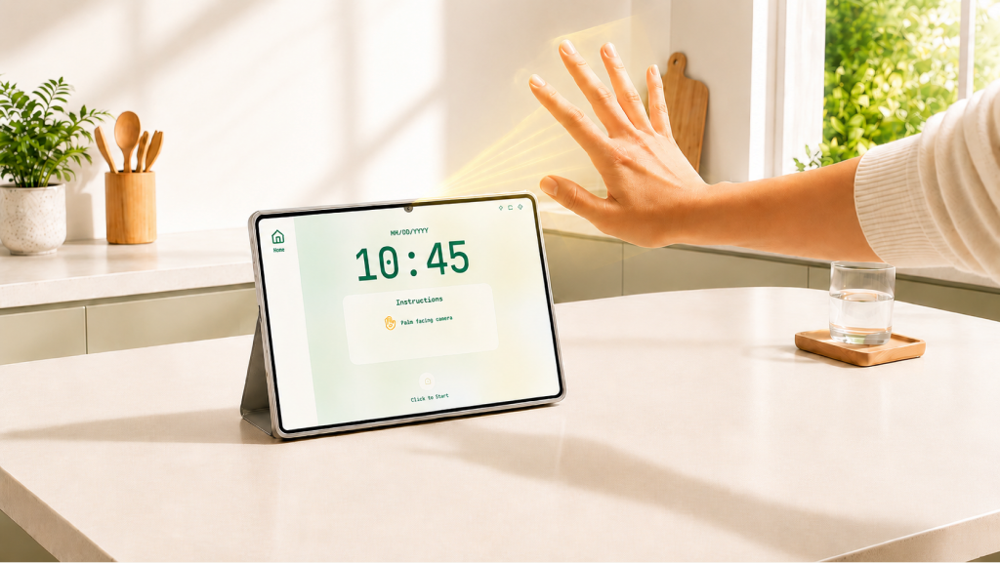
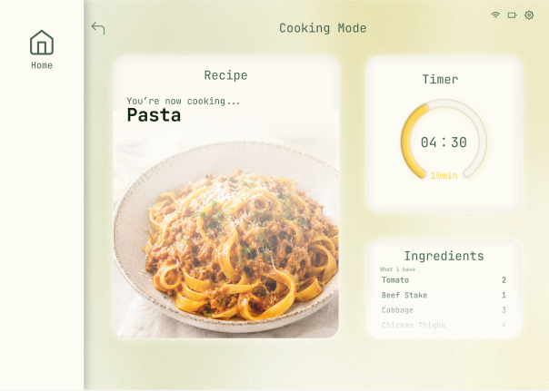
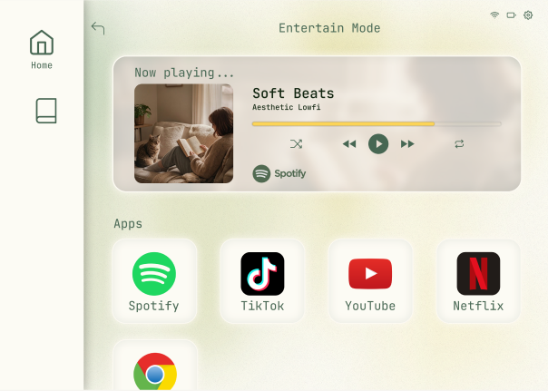
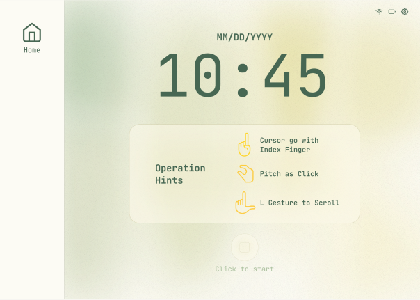
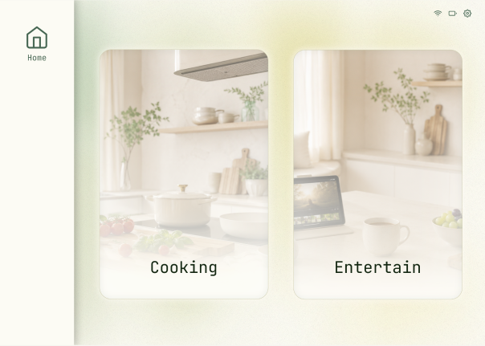
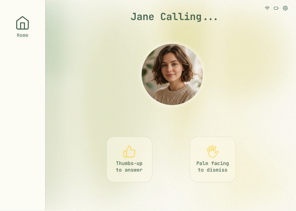
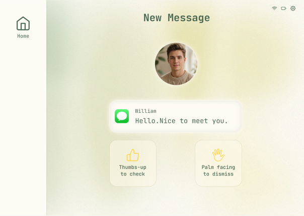
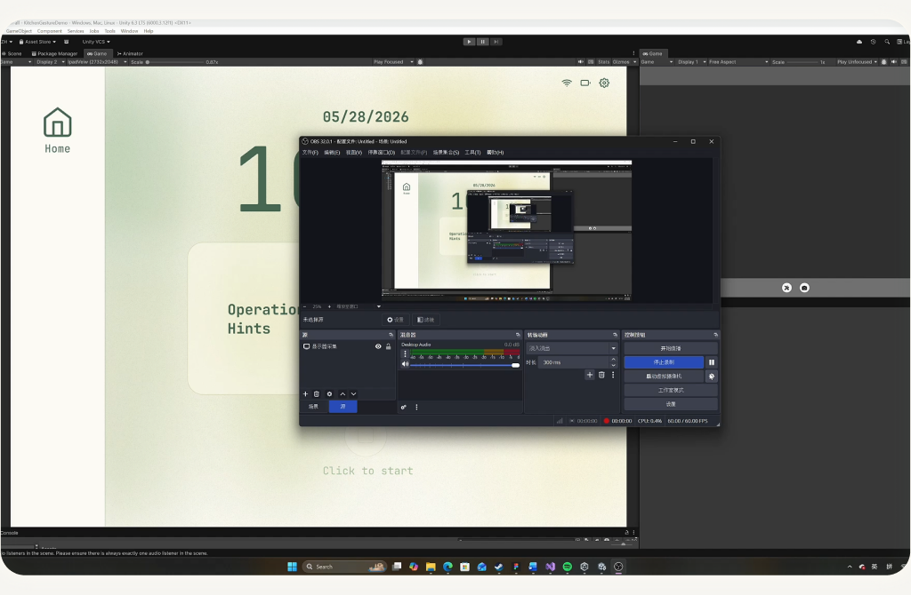

INDIVIDUAL PROJECT / Q2 2026
HOVR
Hands busy.
Flow uninterrupted.
A kitchen-focused tablet experience that combines gesture input, Kitchen Mode, and Entertainment Mode for hands-free multitasking.
- MY ROLE
- UX/UI Designer
Interaction Prototyper - TOOLS
- Figma · Unity
MediaPipe · Xcode - FOCUS
- Gesture interaction
Kitchen UX - OUTPUT
- Interactive
iPad prototype
01 / THE PROBLEM
Cooking occupies your hands.
Touch interrupts your flow.
While cooking, people need to follow recipes, manage timers, enjoy media, and respond to communication. When their hands are occupied or messy, touching a device means pausing to wash and dry their hands.
How might we enable hands-free multitasking while cooking without disrupting workflow?
02 / CORE EXPERIENCE
Two modes. One continuous workflow.

Kitchen Mode
Keep recipes, ingredients, and timers accessible in a cooking-focused interface.

Entertainment Mode
Browse media, play or pause content, and enjoy entertainment while cooking.
03 / HANDS-FREE CONTROL
Small gestures. Clear actions.
The prototype maps real-time hand gestures to cursor movement, selection, scrolling, and interruption handling.
Index finger
Move the cursor.
Pinch
Select an item.
L gesture + movement
Scroll up or down.
Thumbs up
Accept an incoming call or message.
Palm facing camera
Dismiss a notification or reject a call.
04 / USER FLOW
From launch to multitasking.
01 / Home

Pinch to start.
02 / Main

Choose a mode or shortcut.
03 / Kitchen
Choose a recipe and follow its steps.
04 / Entertainment
Browse and control media.
Handle interruptions, then return to cooking.
Calls and messages are simulated in Unity. Thumbs up accepts; a palm facing the camera dismisses. A shortcut area supports switching between cooking and entertainment.


05 / PROTOTYPE IMPLEMENTATION
Making gestures work on screen.
The interaction prototype was built in Unity using MediaPipe for hand tracking, then built for iPad through Xcode for on-device testing.

View interaction demo in FigmaUnity system mock-up → iPad build → on-device interaction testing
The prototype demonstrates interaction behavior. Live calling, messaging, and app installation are outside the implemented prototype; interruptions are simulated in Unity.